06pilastro
di sette
Unire il Mediterraneo
Chiudere i CPR. Accoglienza e casa per tutte e tutti.
Chiusura dei CPR, accoglienza pubblica e diffusa, case popolari da immobili sfitti e beni confiscati alla mafia.

Perché
La Sicilia è il confine dove l’Europa decide chi può entrare e chi no, e dove si vedono le conseguenze di quella decisione: naufragi, centri di detenzione amministrativa, persone trattenute per mesi senza aver commesso alcun reato.
Nello stesso tempo l’isola ha un problema di case che riguarda tutti. Si sfratta per morosità incolpevole, cioè perché uno ha perso il lavoro, mentre migliaia di alloggi restano sfitti e beni confiscati alla mafia si degradano per anni in attesa di una destinazione.
Sono la stessa questione: chi non ha diritto a un tetto — perché straniero, perché povero, perché entrambe le cose — è il più ricattabile sul lavoro. L’accoglienza e la casa non sono due capitoli, sono uno.
Due binari
Cosa può fare la Regione, subito
- Nessun terreno, immobile o fondo regionale ai centri di detenzione amministrativa: la Regione non è obbligata a mettere a disposizione quello che ha.
- Accoglienza pubblica e diffusa in piccoli nuclei, gestita dagli enti locali e non dai grandi centri: costa meno, funziona meglio, non produce ghetti.
- Sostegno ai Comuni perché l’iscrizione anagrafica non sia negata a chi ne ha diritto. L’anagrafe è una funzione statale esercitata dai Comuni: la Regione non può deciderne le regole, può affiancare i Comuni che le applicano.
- Censimento degli immobili sfitti e dei beni confiscati da destinare a edilizia popolare e usi sociali, con i tempi di assegnazione pubblicati.
- Blocco degli sfratti per morosità incolpevole e fondo regionale per chi è sotto sfratto perché ha perso il reddito.
Cosa va strappato allo Stato
- Abrogazione della legislazione securitaria e della legge sull’immigrazione che lega il permesso di soggiorno al contratto di lavoro.
- Chiusura dei centri per il rimpatrio.
- Ius soli e ius scholae.
L’obiezione
Ci diranno «prima gli italiani». Gli alloggi sfitti, i beni confiscati e il blocco degli sfratti per chi ha perso il lavoro non hanno nazionalità: riguardano chi in Sicilia non arriva a pagare l’affitto, che è la maggioranza di chi chiede casa. Mettere i poveri gli uni contro gli altri è esattamente il modo per non dare casa a nessuno.
Ci diranno che l’immigrazione è materia dello Stato. Lo è, e lo scriviamo. Ma i terreni, gli immobili e i fondi regionali sono della Regione, e oggi nessuno si chiede a che cosa servano.
Come ci arriviamo
Su questo pilastro lavora un tavolo aperto a comitati, collettivi, sindacati e singole persone. Le proposte qui sopra sono una bozza: si discutono al tavolo e si votano in assemblea.
Gli altri pilastri
- 01Ripudiare la guerraVia le basi. Stop al MUOS. Sicilia terra di pace.
- 02Difendere il lavoro12 euro l’ora, contratti veri, stop al caporalato.
- 03Difendere la saluteOspedali aperti, assunzioni stabili, liste d’attesa abbattute.
- 04Tenere pubblica l’acquaReti riparate. I soldi del Ponte ai territori.
- 05Decidere sul proprio corpoConsultori pubblici. Diritti garantiti in ogni ospedale.
- 06Unire il MediterraneoChiudere i CPR. Accoglienza e casa per tutte e tutti.
- 07Proteggere il territorioBonifiche pagate da chi ha inquinato. Scuola pubblica gratuita.

La Sicilia che 
unire il Mediterraneo
Dai forza a questa proposta: aderisci e partecipa al tavolo.